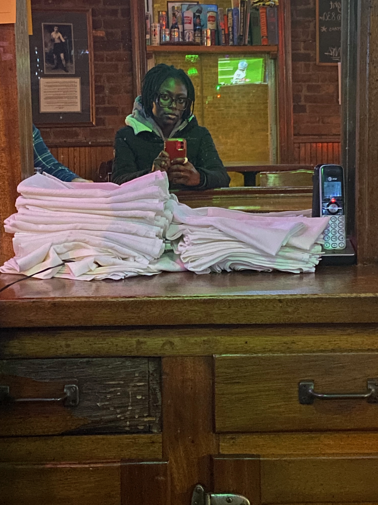

Mofoluwaso Adesanya

Contact Me
Summary:
IBM Test Engineer seeking to transition to a Software Engineering Role.
Expereinced in leveraging python scripting to deliver product fucntionlaity.
Skills:
- Programming Languages: Python, C++, HTML, CSS, Java, JavaScript
- Operating Systems/Technologies: Linux, MacOS, Windows, Excel, MS Office, PostgreSQL
- Technical Knowledge: Data Structures and Algorithms, Object Oriented Programming, GitHub, Pytest
Bash Scripting, Test Analysis & Debug, Test Automation, Agile Methodologies.
Professional Experience
Test Engineer, IBM
-
Maintain the mainframe hardware inventory database to provide accurate and reliable data for
testing, and reduce test delays due to errors
-
Develop Python scripts to track hardware movement thus ensuring real-time accurate inventory updates and overall inventory
management efficiency
-
Collaborate with technical stakeholders to develop and deploy Python code for securing the mainframe BMCs (Baseboard Management
Controllers), a key aspect of ensuring system security
-
Secured approximately 40 BMCs, enabling further rigorous testing in internal IBM labs and supporting the successful deployment of the
next generation of mainframe systems
-
Create, manage and escalate defect tickets to development teams, supplying additional error log data to collaboratively resolve defects
and deliver functional machines to our clients
-
Developed Python code to parse system data and extract key information which informed product disposition and saved cost by
reducing unusable inventory
Education
Bachelor Of Science in Computer Engineering, Hofstra University
- Research: Image-based visual servoing for Target Tracking
- Academic Achievements: Nancy and Stuart Rabinowitz Awardee, Provost Scholars Recipient
- Leadership: APEX Chair (National Society of Black Engineers), Vice President (African Students Association), Member (Theta Tau)
Community Involvement
- Volunteer, Girls Rock STEAM and Black Girls Code
- Contributor, Morrison Mentors, Sargeant Elementary and Poughkeepsie High School
- Mentor, IBM x Newburgh Fire Academy Internship
- Panelist Speaker, National Society of Black Engineers (NSBE), Marist Chapter